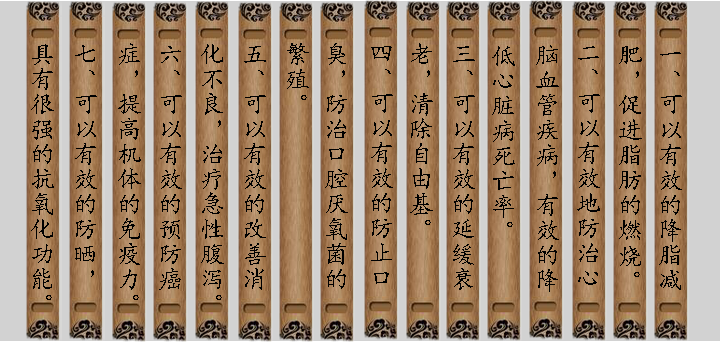

“喝荼当于瓦屋纸窗下，清泉绿荼，
用素雅的陶瓷具，同二三人共饮，
得半日之闲，可抵十年的尘梦。”
| 茶之艺 |
01
—————
杀青

通过高温，破
坏茶叶中的酶类
活性，制止茶叶
继续氧化，蒸发水
分,使叶子变软，
为揉捻做准备。
01
—————
揉捻

通过利用外力作
用，使叶片揉破变
轻，卷转成条，体
积缩小便于冲泡，
且对提高茶滋味浓
度也有重要作用。
01
—————
干燥

绿茶的干燥工序，
一般先经过烘干,
然后再进行炒干。
使茶叶的水分得以
蒸发，固定茶叶品
质充分发挥茶香。
| 茶之韵 |
《茶诗》
唐·郑愚
嫩芽香且灵，吾谓草中英。
夜臼和烟捣，寒炉对雪烹。
惟忧碧粉散，规绿花生。
| 茶之效 |
